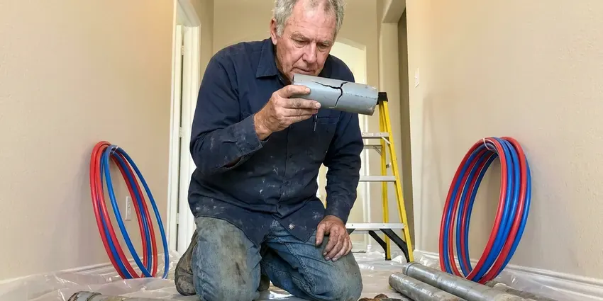

Tankless Water Heater Replacement in Princeton, WV
For efficient tankless water heater replacement in Princeton, WV, trust GJK Plumbing. We ensure your home has consistent hot water.
- Reliable Hot Water
- Expert, Licensed Plumbers
- Quick Tankless Installation
- Fast Tankless Replacement

Stop Waiting on Lukewarm Showers. Upgrade Your Tankless in Princeton, WV.
Call GJK Plumbing today for a free estimate on your tankless water heater replacement.
Reliable Tankless Water Heater Replacement for Princeton, WV Homes
GJK Plumbing specializes in professional tankless water heater replacement across Princeton, WV. If your current tankless unit is past its prime, frequently breaking down, or simply not meeting your hot water demands, it might be time for an upgrade. We handle all aspects of removing your old unit and installing a brand new, energy-efficient model.
Our expertise includes:
- Careful sizing and installation of new tankless units.
- Correct sizing and model selection for your home.
- Gas line sizing and upsizing for 199,000 BTU tankless units

Additional Plumbing Replacement Services in Princeton, WV
When repairs are no longer enough, our replacement services in Princeton, WV deliver durable upgrades that restore full performance.


Customers
Why Choose GJK Plumbing for Tankless Water Heater Replacement in Princeton, WV?
Choosing the right plumbing partner for your tankless water heater replacement is key for long-term performance and peace of mind. We bring years of experience directly with these advanced systems.
- Scale Protection, Every install includes isolation valves so the heat exchanger can be descaled without cutting pipe.
- Space Saving, Their compact design allows tankless units fit in smaller spaces, freeing up useful room in your utility closet or garage.
- Energy Savings, Tankless water heaters only heat water when you need it, which can noticeably reduce energy use compared to traditional tank models, a big plus for West Virginia utility bills.
Citywide Coverage
From downtown lofts to suburban homes, our technicians are familiar with the plumbing layouts found throughout Princeton. We make sure every installation meets local codes and your standards.
Experienced Team
Each technician at GJK Plumbing knows tankless technology, so your replacement is done accurately and efficiently. We focus on details like proper gas line sizing, venting and electrical connections for top performance and safety.
Safety-First Approach
Safety is our top priority for every tankless water heater replacement. We adhere strictly to all local West Virginia plumbing and gas codes, so your new unit is installed securely and operates without risk.
Trusted Certified Princeton Plumbing Services Professionals
At GJK Plumbing, we take pride in providing certified plumbing services throughout Princeton, WV. Backed by leading industry credentials, our experienced plumbers combine technical skill with genuine customer care. Whether it is repair, installation, or maintenance, we follow strict safety and quality standards to deliver long-lasting results you can trust.
Call Us Now PHCC Plumbing Contractor Recognition
PHCC Plumbing Contractor Recognition Better Business Bureau (BBB) Accreditation
Better Business Bureau (BBB) Accreditation Angi Certified Pro
Angi Certified Pro ISO 9001 Quality Management Certification
ISO 9001 Quality Management CertificationTrusted Tankless Water Heater Replacement Services in Princeton, WV
Emergency Tankless Water Heater Replacement in Princeton
A sudden tankless water heater failure can leave your Princeton home without hot water, which is a major inconvenience. GJK Plumbing offers emergency tankless water heater replacement to restore your hot water fast. We prioritize urgent situations, working to diagnose the issue and, if replacement is necessary, get a new unit installed as soon as possible. Our goal is to minimize your downtime and get your home back to normal with reliable hot water.

Tankless vs. Tank Water Heater Conversion in Princeton, WV
Considering converting from a traditional tank water heater to a tankless system in your Princeton, WV home? This is a common and beneficial upgrade, but it requires specialized expertise. We handle the entire conversion, which can involve rerouting gas lines, upgrading electrical service, modifying water lines and installing new venting. Our team ensures a smooth transition, so you can enjoy the long-term benefits of a modern, efficient tankless system.
Exterior Mount Tankless Units in Princeton, WV
Many homes have tankless heaters mounted on an exterior wall with no venting at all, since the unit exhausts directly outside. These units face sun, rain and temperature swings, which can wear out plastic covers and wiring over time. Freezing weather is a regular part of West Virginia winters, and pipes in exterior walls, crawlspaces and older homes are at real risk. When we replace them, we check the pipe cover, freeze protection settings and the electrical connection. We can add a protective pipe cover kit to guard the water and gas lines. Exterior models are often the simplest swap when the gas line is already sized correctly.
Emergency Tankless Replacement in Princeton, WV
A tankless heater that leaks from the heat exchanger or refuses to ignite can leave you with no hot water at all. We offer same-day emergency replacement for common models and can often get a unit installed the day you call. If your exact model is not in stock, we can sometimes do a temporary repair to restore hot water while the replacement ships. We shut off gas and water to stop any leak as soon as we arrive. Call (681) 223-3607 any time your tankless quits.
Condensing Tankless Replacement in Princeton
Condensing tankless units like the Navien NPE series or Rinnai Sensei reach efficiencies above 90 percent by capturing heat from exhaust gases. They vent through inexpensive PVC and produce acidic condensate that must be neutralized and drained properly. We install a neutralizer cartridge and route the condensate line to an approved drain. Damp basements and crawlspaces are common in Princeton and around the state, which can accelerate corrosion on pipes and fittings. Condensing units still save gas because they work year-round on showers, laundry and dishes. We explain the cost difference so you can decide if the efficiency gain is worth it.
Commercial Tankless Water Heater Replacement in Princeton, WV
Businesses in Princeton, WV often need robust hot water solutions, and tankless systems can provide the efficiency and capacity needed. We regularly replace commercial tankless units for restaurants, offices and other facilities with minimal disruption to your operations. Our plumbers are skilled with high-capacity models and complex plumbing layouts. We deliver a reliable hot water supply that meets your business's demands and health code requirements.
Recirculation Tankless Upgrades in Princeton, WV
If you are tired of running the tap waiting for hot water, a tankless with a built-in recirculation pump can bring heat to the fixture in seconds. Navien A series and Rinnai units with internal pumps can use a dedicated return line or a crossover valve under the farthest sink. We program schedules so the pump runs only during your morning and evening peaks. That keeps gas use reasonable while saving thousands of gallons of wasted water a year. This upgrade is a favorite in long single-story ranch homes.

Rinnai Tankless Water Heater Replacement in Princeton
Rinnai is a leading brand in the tankless water heater market, known for its quality and innovation. If your Rinnai unit is aging or malfunctioning, GJK Plumbing provides expert Rinnai tankless water heater replacement in Princeton. We make sure your new Rinnai unit is installed correctly, maximizing its efficiency and lifespan. Our technicians are familiar with the installation requirements and venting options for Rinnai models, so the upgrade goes smoothly.
Tankless Water Heater Replacement Near Me in Princeton, WV
When your tankless unit needs replacing, you want a reliable local company. We pride ourselves on being the go-to choice for tankless water heater replacement near me in Princeton, offering reliable solutions and upfront pricing to our neighbors throughout the community.
Do not settle on your home's hot water supply. For dependable tankless water heater replacement near me in Princeton, choose GJK Plumbing. We provide upfront estimates, transparent communication and expert workmanship, making your upgrade to endless hot water a smooth and stress-free experience.
GJK Plumbing at a Glance
- Fully licensed plumbing team covering Princeton, WV
- Same-day appointments and 24/7 emergency response
- Upfront, flat-rate pricing before work begins
- 4.8-star rated by 832+ West Virginia customers
Princeton Map
Princeton Information
- Population
- 5,642
- Area codes
- Local
- Service area
- Princeton and communities within 40 miles
- Nearby
- Bluefield, Beckley, Oak Hill, Charleston
Water hardness in West Virginia ranges from moderate to hard in many areas, and mineral scale is a common issue for water heaters and fixtures. Scale builds inside tankless heat exchangers over time, so a properly sized replacement with flush valves helps protect homes in Princeton, WV from early failures.
Expert Services
Trust our professionals for reliable GJK Plumbing solutions in Princeton, WV.
Our Specialized Plumbing Services in Princeton, WV
At GJK Plumbing, we provide a complete range of plumbing services across Princeton, WV. From leak detection to full system installations, our team ensures fast, precise, and affordable service for both residential and commercial properties. Explore our core services below:


How Our Tankless Water Heater Replacement Process Works in Princeton, WV
Replacing a tankless heater takes planning around gas, venting and water. Here is how we keep it simple.
Request a Quote
Contact GJK Plumbing today at (681) 223-3607 to schedule an on-site evaluation for your tankless water heater replacement. Our team will discuss your hot water needs and provide a clear, transparent estimate.
Unit Selection
Based on your home's demands and existing setup, we will help you choose the ideal tankless water heater model. We consider factors like fuel type, flow rate and energy efficiency.
Expert Installation
Our licensed plumbers will carefully remove your old unit and install the new tankless water heater. We make sure all gas, water and vent connections meet West Virginia code requirements for safety and performance.
Frequently Asked Questions About Tankless Water Heater Replacement in Princeton
The cost of tankless water heater replacement in Princeton, WV usually ranges from $3,000 to $6,000, depending on the unit's capacity, brand, complexity of installation, such as converting from a tank model, and any needed electrical or gas line upgrades. This price usually includes the unit itself and labor. We provide a written, upfront quote after a thorough assessment of your home.
A direct swap usually takes four to six hours. A tank to tankless conversion with new gas and venting usually takes a full day.
A standard tankless water heater replacement, if you are upgrading from an existing tankless unit, usually takes 4 to 8 hours. If you are converting from a traditional tank water heater, the process can take longer, possibly a full day, due to additional plumbing, gas or electrical changes required for proper installation and venting.
A standard tankless water heater replacement typically takes between 4 and 8 hours. This timeframe can vary based on whether we are replacing an existing tankless unit with a similar model or upgrading from a traditional tank water heater. A tank conversion may require more extensive changes to gas lines, electrical or venting.
New tankless water heaters usually come with a manufacturer's warranty, which usually covers the heat exchanger for 10 to 15 years and parts for 3 to 5 years. GJK Plumbing also provides a labor warranty on our installation work for your peace of mind. We will go over warranty details for your chosen unit during your consultation.
Most manufacturers offer 10 to 15 years on the heat exchanger and about 5 years on parts for residential use. We add our own labor warranty and register the unit on your behalf.
Yes, tankless water heaters are generally more energy-efficient than traditional tank models. They only heat water on demand, eliminating the standby heat loss that comes with keeping a large tank of water hot. This can lead to real savings on your utility bills over time, particularly in homes with varying hot water usage.
We install Navien, Rinnai, Noritz, Takagi and Rheem tankless heaters. Each has strengths, and we recommend based on your flow needs, venting options and budget.
What People Are Saying About Our Plumbing Experts?

Emily R.
I called GJK Plumbing for plumbing repair, and the technician was fast, polite, and thorough. They explained the problem clearly and fixed it the same day. I will definitely hire them again. Highly recommended!
Plumbing Repair · Dunbar, WV
Robert G.
The trenchless sewer replacement saved our front yard. They walked us through the camera inspection footage first so we knew exactly what we were paying for.
Sewer Line Replacement · Dunbar, WV
Patricia H.
We had a slab leak that two other companies could not find. GJK Plumbing located it in under an hour, explained our options, and the price matched the quote to the dollar.
Slab Leak Repair · Dunbar, WV
Mark T.
When our office needed drain cleaning, GJK Plumbing provided quick, reliable service. The plumber arrived on time and made sure every drain flowed perfectly before leaving. Very satisfied.
Drain Cleaning · Charleston, WV
Laura S.
I scheduled a water heater replacement, and the team made the process smooth and affordable. The new unit works perfectly, and they cleaned up after completing the job.
Water Heater Replacement · Charleston, WVJames P.
Our commercial plumbing system had a leak under the sink, and GJK Plumbing handled it professionally. The plumbers arrived quickly and restored everything without disruption to our customers.
Commercial Plumbing · Beckley, WV